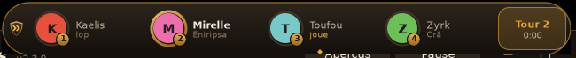
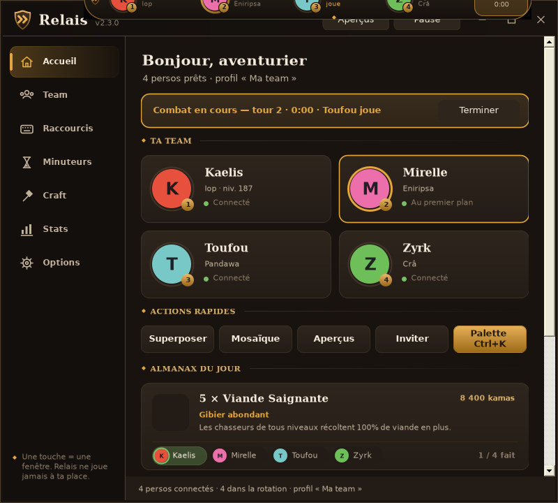
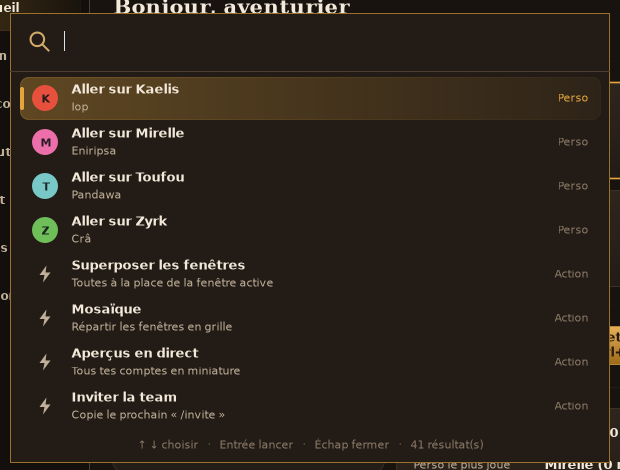
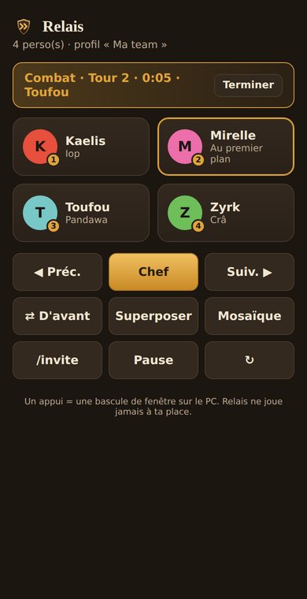
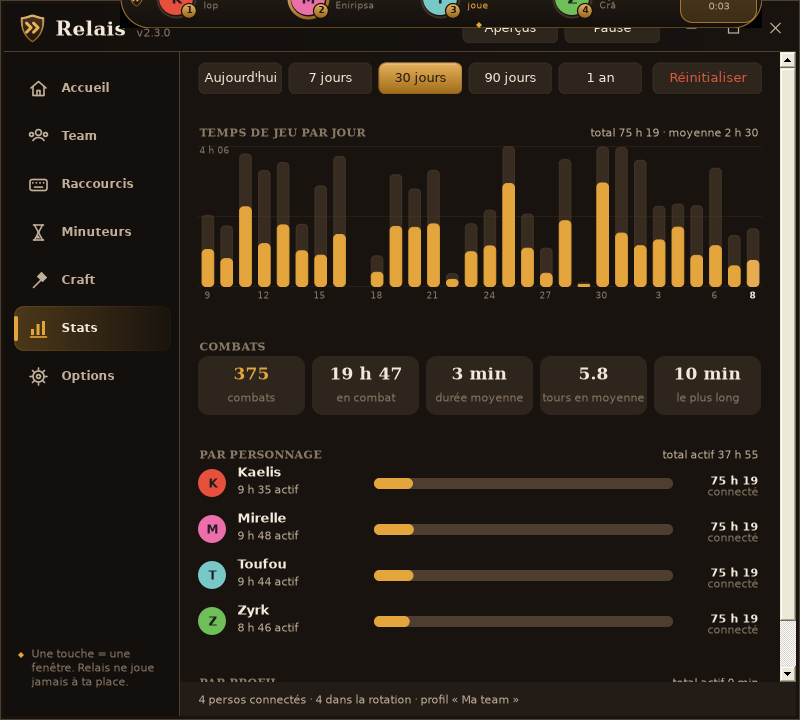

Une touche = une fenêtre. Relais bascule sur le bon perso quand c'est son tour, range tes fenêtres, suit tes combats et ton Almanax. Gratuit, open source, et conforme aux règles d'Ankama.
Windows 10 / 11 · .NET Framework 4.8 (déjà présent sur Windows) · Mises à jour automatiques


Et rien de plus côté jeu : Relais ne fait que passer d'une fenêtre à l'autre.
F1, F2, boutons de souris, Alt + molette… Bascule instantanée, ordre d'initiative par glisser-déposer.
Quand la fenêtre d'un perso clignote, Relais t'y emmène. La mini-barre affiche le tour et le chrono du combat.
Toutes les fenêtres au même endroit pour parler aux PNJ, ou en grille sur l'écran de ton choix.
Tous tes comptes en miniature, en direct — parfait sur un deuxième écran.
Tape « kae », « mosa » ou « 30 min » puis Entrée : tout se fait au clavier.
L'offrande du jour avec une case par perso, minuteurs d'enclos et de récolte, rappels quotidiens.
Recettes DofusDB, ingrédients répartis entre tes persos, fiches de perso avec objectifs et donjons.
Temps de jeu par perso, combats, graphiques sur 7 jours à 1 an. Tout reste sur ton PC.
Codes de team à partager, sauvegarde de tes réglages sur ton compte GitHub, thème clair, français ou anglais.
Ctrl+K, quelques lettres, Entrée. Même en jeu, avec le raccourci de ton choix.

Scanne le QR code affiché dans Relais : ta team apparaît sur ton téléphone.

Relais repère les combats grâce aux alertes de tour, sans rien lire dans le jeu.

Relais respecte la règle « une action physique = une action sur un seul compte » : il ne fait que changer de fenêtre.
Mettre une fenêtre Dofus au premier plan, la déplacer ou la redimensionner, afficher des infos par-dessus sans intercepter tes clics.
Envoyer un clic ou une touche au jeu, répéter une action sur plusieurs comptes, lire la mémoire ou le réseau du jeu.
Chaque action en jeu, c'est toi qui la fais, compte par compte. Relais te fait juste gagner le temps de chercher la bonne fenêtre.
Aucun compte, aucune publicité, aucune donnée envoyée.
Relais-Setup.exe (installateur) ou Relais.exe (portable, sans installation).
Windows peut afficher « Windows a protégé votre PC » : clique sur « Informations complémentaires » puis « Exécuter quand même ». Le code source est public.
Connecte tes comptes : ils apparaissent tout seuls. Un petit assistant règle les raccourcis avec toi.
S'il t'aide au quotidien, tu peux soutenir le projet — ou simplement en parler à ta guilde.